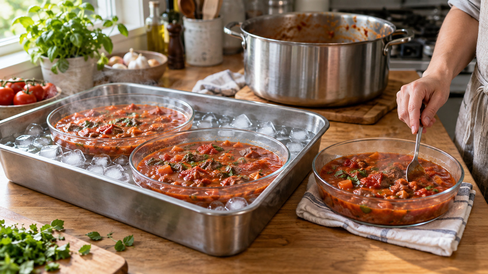

熱い煮込みは、浅い容器へ分ける｜冷ますべきは「表面」ではなく「中心」
カレーを作り終え、鍋のふたを開けておく。
しばらくすると湯気は減り、表面もぬるくなる。そろそろ冷蔵庫へ入れてよさそうに見える。ところが、お玉で底から返すと、内側からまだ熱い湯気が立つ。
このずれが、煮込みを冷ますときの難しさだ。
見るべきなのは、表面ではない。いちばん熱が逃げにくい、容器の中心である。
今日の結論
鍋いっぱいのカレー、シチュー、スープを保存するときは、鍋のまま室温で待たない。
調理が終わったら浅い容器へ分け、料理の深さを5cm以下にする。量が多いときは、容器を氷水へ当てて、ときどき混ぜる。冷蔵庫では重ねず、冷えるまではふたを少しずらす。
大事なのは「常温になるまで待つ」ことではなく、中心の温度を短い時間で下げることだ。
厚生労働省も、残った食品は浅い容器へ小分けして早く冷やすよう案内している。米国食品医薬品局の2026年版フードコードでは、浅い容器、小分け、氷水、熱を逃がしやすい容器に加え、食品の深さを約5cm以下にする方法が明記された。
深い鍋では、熱の出口が遠い
熱は、温度の高い場所から低い場所へ移る。
煮込みの表面は、冷たい空気に触れている。鍋肌の近くでは、金属を通して外へ熱を渡せる。だが、鍋の中心にある熱は、周囲の煮込みを通り抜けてからでなければ外へ出られない。
浅い容器へ移すと、この道のりが短くなる。同じ1Lでも、一つの深い鍋に入れるより、二つか三つの浅い容器へ分けた方が、中心から表面までの距離は短い。空気や容器に触れる面も増える。
たとえるなら、厚い布団と薄いタオルの違いだ。どちらも同じ重さだとしても、折り重ねた布団の中心は熱を抱える。薄く広げたタオルは、両面から熱を逃がせる。
煮込みも同じで、量だけでなく厚みが冷却時間を決める。
研究で分かったのは、「何に入れるか」より先に「どれだけ深いか」
実際の調理現場で料理の冷え方を追った研究では、食品の深さが冷却速度へ強く影響していた。氷水を使うことも、冷える速さを大きく変えた。
特に、深さ約5cm以下で冷やした料理では、予測上の細菌増殖が小さかった。一方、過去の研究では、深さが約7.6cm以上になると、基準よりゆっくり冷える可能性が高くなった。
ここから家庭へ持ち帰れるのは、「保存容器を小さくすればよい」という曖昧な話ではない。
容器の横幅が小さくても、上までたっぷり詰めれば中心は深いままだ。反対に、少し大きめの容器へ薄く広げれば、熱の出口は近くなる。
選ぶ基準は容量ではなく、入れた後の料理の深さを5cm以下にできるかだ。
湯気が消えても、中心はまだ冷えていない
カレーやシチューは、水のようには動かない。とろみがあるため、温かい部分と冷たい部分が自然に入れ替わりにくい。
そのため、表面の湯気が減っても、鍋の中心には熱が残る。室温でゆっくり冷ましている間、加熱を生き残った芽胞から細菌が増えやすくなることがある。
この料理で特に考えたいのが、ウエルシュ菌だ。これは、加熱に強い休眠状態で残ることがあり、厚生労働省の資料では43〜45℃付近でよく増えるとされている。大鍋の煮込みが55℃前後からゆっくり冷えると、その温度帯に長くとどまりやすい。
だから、保存前の仕事は「熱い料理を放置して、冷蔵庫に入れられる温度を待つ」ことではない。増えやすい温度帯を、中心まで早く通過させることだ。
家でのやり方：1Lの煮込みを三つに分ける
用意するもの
- 保存したいカレー、シチュー、スープなど 約1L
- 浅い耐熱容器 3個
- 清潔なスプーンまたはゴムべら
- 氷水を張れるバットまたはボウル
- あれば中心温度を測れる料理用温度計
金属製の容器は熱を逃がしやすい。ただし、耐熱ガラスや樹脂容器でも、深く詰めず、小分けと氷水を組み合わせればよい。熱い料理を入れられる製品かは、容器の表示を確認する。
手順
- 加熱を終えたら、約1Lの煮込みを三つの容器へ分ける。各容器の料理の深さが5cm以下になるようにする。
- 容器を氷水へ当てる。氷水が料理へ入らない高さにし、清潔なスプーンで底からときどき返す。表面だけでなく、中心の熱を外へ運ぶためだ。
- 冷蔵庫へ入れるときは、容器同士を重ねず、周囲に冷気が通る隙間を作る。冷却中はふたを少しずらし、上から汚れが落ちない場所へ置く。十分に冷えたら、ふたを閉める。
- 温度計があるなら、容器の中心を測る。厳しく確認する目安として、57℃から21℃までを2時間以内、そこから5℃以下までをさらに4時間以内に下げる基準がある。日本の公的資料でも、調理後は速やかに10℃以下へ冷やすよう示されている。
- 食べるときは、中心まで十分に再加熱する。厚生労働省の家庭向け案内では、75℃以上を目安としている。
氷水を用意できない日でも、浅く分けるだけで熱の逃げ道は短くなる。冷蔵庫へ入れることをためらって鍋のまま長く置くより、熱い料理を耐熱の浅い容器へ小分けし、間隔を空けて冷蔵する方が目的に合う。
冷蔵庫を「大きな鍋の冷却装置」にしない
熱い鍋を丸ごと冷蔵庫へ入れると、中心は冷えにくいまま、周囲の食品まで温めやすい。反対に、室温で完全に冷えるまで待てば、今度は中心が温かい時間を長くする。
この二択にするから迷う。
答えは、鍋か冷蔵庫かではなく、冷蔵庫へ入れる前に形を変えることだ。
深い一つを、浅い三つへ変える。氷水で外側を冷やし、混ぜて内側の熱を運ぶ。冷蔵庫では重ねず、冷気に触れる面を残す。
温度を下げる仕事を、室温だけにも冷蔵庫だけにも任せない。いくつかの小さな方法へ分けると、家庭でも中心まで冷やしやすくなる。
日常へ広げるなら、「作り置きは平らにする」
この考え方は、煮込みだけのものではない。
ミートソース、豚汁、ポタージュ、炊いたご飯、マッシュポテト、ゆでた豆にも使える。水分が多い料理だけでなく、密に詰まり、中心の熱が逃げにくい食品ほど、薄く分ける意味がある。
ご飯なら、一食分ずつ平らに包む。ミートソースなら、深い保存瓶へ詰めず、浅い容器へ分ける。買い物では、容量だけでなく、底が広く、料理を薄く広げられる容器を選ぶ。
冷凍するときも同じだ。平らな一食分は早く凍り、解凍するときも中心まで熱が届きやすい。浅くすることは、保存前だけでなく、翌日の温め直しまで助ける。
まとめ
煮込みの表面がぬるくなっても、中心まで冷えたとは限らない。
深い鍋では、中心の熱が外へ出るまでの道のりが長い。とろみのある料理では中身も動きにくく、熱い部分が残りやすい。
だから、保存するときは待つのではなく、形を変える。
深さ5cm以下に分ける。量が多ければ氷水へ当てて混ぜる。冷蔵庫では重ねず、冷えてからふたを閉める。
冷ます料理で見るべきなのは、湯気ではない。最後まで熱を抱えている、容器の中心だ。
参考文献
- 厚生労働省. 家庭での食中毒予防. https://www.mhlw.go.jp/stf/seisakunitsuite/bunya/kenkou_iryou/shokuhin/syokuchu/01_00008.html
- 食品安全委員会. ウエルシュ菌食中毒について. https://www.fsc.go.jp/dial/dialqa20170608_4.html
- 厚生労働省. 大量調理施設衛生管理マニュアル. https://www.mhlw.go.jp/content/11130500/000835930.pdf
- Koreen N, et al. Cooling Uncovered Foods at a Depth of ∼5.1 cm (2 in.) or Less Poses Little Risk of Pathogen Growth. Journal of Food Protection. 2024;87(10):100356. https://doi.org/10.1016/j.jfp.2024.100356
- Brown LG, et al. Quantitative Data Analysis To Determine Best Food Cooling Practices in U.S. Restaurants. Journal of Food Protection. 2014;77(5):778-783. https://doi.org/10.4315/0362-028X.JFP-13-252
- U.S. Food and Drug Administration. FDA Food Code 2026, §§3-501.14–15. https://www.fda.gov/media/194741/download
※5cm以下という深さは、研究結果と米国の食品衛生基準を家庭向けの作業へ移した目安である。容器、料理の粘度、量、冷蔵庫の性能で冷却速度は変わるため、可能なら中心温度で確認する。